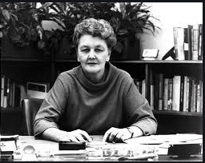

History of alcoholism
The Diagnostic and Statistical Manual of Mental Disorders or DSMIV distinguished
two disorders involving alcohol; alcohol abuse, and alcohol dependence, both with specific criteria.
DSM5 combines the two DSMIV disorders, into a disorder called alcohol use disorder (AUD) with mild,
moderate, and severe sub-divisions. In the past, there was a large stigma that came with being an
alcoholic. This made the treatment for alcoholism inadequate because it was seen as more of a choice
than an addiction or disorder
In 1944:
Marty Mann founds the National Committee for Education on Alcoholism (today the
National Council on Alcoholism and Drug Dependence) around the following
propositions:
1.Alcoholism is a disease.
2.The alcoholic, therefore, is a sick person.
3.The alcoholic can be helped.
4.The alcoholic is worth helping.
5.Alcoholism is our No. 4 public health problem, and our public responsibility.

Mann calls for a five-prong approach to be achieved by local NCEA affiliates:
- Launching local public education campaigns on alcoholism.
- Encouraging hospitals to admit alcoholics for acute detoxification.
- Establishing local alcohol information centers.
- Establishing local clinics for the diagnosis and treatment of alcoholism.
- Establishing "rest centers" for the long-term care of alcoholics.